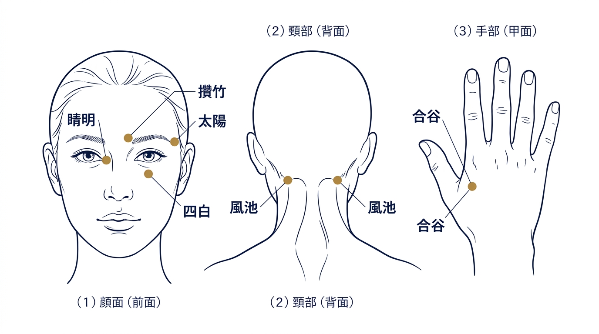

近視の鍼灸
遠くの物がぼやけて見える屈折異常です。眼科での適切な矯正と生活習慣の見直しに加え、鍼灸で眼精疲労や緊張を和らげます。
まず知っておきたい要点と改善の流れ
近視は、眼に入る平行光線が網膜より前方で焦点を結ぶ屈折異常です。遺伝的要因に加え、長時間のパソコン・スマートフォン・読書などで近くを見続けると毛様体筋の調節緊張が過剰に続き、眼軸が前後に伸びることで進行しやすくなります。屋外活動の減少や暗い環境・悪い姿勢での作業も負担を高めます。強度近視へ進行すると眼球構造の変化に伴い網膜剥離などの合併症リスクが高まるため、定期的な眼科検診が大切です。（公式解説）
このようなお悩みはありませんか？
- ✓遠くの看板や黒板の文字がぼやけて見えにくい
- ✓遠くを見るとき無意識に目を細めてしまう
- ✓パソコンやスマホ作業の後に前頭部の頭痛や目の疲れが出る
- ✓夜間のライトがギラついて運転しにくい
当院の施術アプローチ・改善の流れ
なぜ鍼灸で改善へ向かうのか？（作用機序の図解）
近視に対する鍼灸は、後頸部〜眼周囲の微小循環と毛様体筋・自律神経調整機序を通じて、お体本来の回復力を引き出します。

眼球周囲の危険な深刺しを避け、風池・天柱・合谷・太衝など安全な経穴へ繊細に施術します。
PC・スマホ作業や緊張で固まった首深層筋と眼輪筋周囲の血流を促し、重だるさを軽減します。
交感神経優位による目の乾き・ピント調節疲労を鎮め、涙液分泌とリラックス反応を助けます。
眼科の点眼・定期検査を最優先としつつ、日々の眼精疲労や頭痛・肩こりの連鎖を整えます。
院長YouTube解説・関連動画
近視が進行しないためにできること
環境によって近視は進行するものです。この環境での近視の進行は、日常生活での習慣を改めることで防ぐことができます。近視の進行を防止するために大切なことは、正しい姿勢と適度な明るさです。
日頃から姿勢が悪かったり、寝転んだ状態でテレビを見たり読書をしたりしている状態が続くと、近視が進行します。場合によっては、左右で視力の差が出ることもあります。
暗い場所でスマートフォンを使ったり本を読んだりすることも目に負担がかかります。照明で必要な明るさは300ルクス以上と言われています。
さらに、電灯には昼光色のものと電球色のものがありますが、電球色の場合は少し暗く感じることが多いと言われています。電灯の色は昼光色か両方ミックスして使うことをお勧めします。
適度に目を休めることも目のためには非常に大切です。
作業などで長い時間近くを集中して見続けると、毛様体筋が緊張した状態が続くことになり近視の進行につながります。テレビやパソコン、タブレットなどの画面で作業をする場合は、1時間に10～15分程の休憩をとりましょう。
文字や画面が小さいものを見続ける場合は、より注意が必要です。時々遠くを見たり、意識的にまばたきしたり、目を上下や左右に動かしたりすることをお勧めします。
休憩をする時には、目を閉じて目を休めたり、蒸しタオルやアイマスクを使って血行を良くしたりすることもお勧めです。
近視の改善の主要な目的は、クリアな視力を回復させることです。近視の改善法は、眼球の前部に入る光の量や焦点を調整することにより、網膜上に適切な像を形成します。
1. 眼鏡
眼鏡は最も一般的で簡単な改善法です。
シングルビジョン眼鏡： これは一般的な眼鏡で、近視、遠視、または乱視を矯正します。
進行レンズ： 複数の焦点域を持つレンズです。近く、中距離、遠くを見るための異なる焦点域が含まれています。
2. コンタクトレンズ
眼鏡と同じく、コンタクトレンズは網膜上に正確な焦点を形成します。
ソフトコンタクトレンズ： これは最も一般的なタイプのコンタクトレンズです。
ハードコンタクトレンズ： より長持ちし、特定の状況でより良好な視力を提供することができます。
オルソケラトロジー： 特殊なハードコンタクトレンズを夜間に着用することで、角膜の形状を一時的に変え、昼間は裸眼でクリアに見ることができる改善法です。
3. 手術
近視の手術は、角膜の形状を変えることで光が網膜上に焦点を合わせるのを助けるものです。
レーシック手術： レーザーを使用して角膜の表層を削り取り、その後の過程で角膜の形状が変わり、屈折異常が修正されます。
PRK (Photorefractive Keratectomy)： これもレーザーを使用する方法ですが、角膜の表層を完全に除去することなく改善します。
レンズ交換手術： 高度な近視の場合に推奨されることがあります。自然のレンズを取り外し、代わりに人工レンズを挿入します。
4. 薬
特定のケースや子供の近視の進行を遅らせるために、アトロピンという点眼薬が使用されることがあります。
5. 近視の予防とマネジメント
屋外活動： 研究によれば、子供たちが1日に1時間以上屋外で過ごすことで近視のリスクが低減する可能性が示唆されています。
適切な照明： 読書や作業をする際は、十分な照明を確保することが重要です。
定期的な休憩： 長時間の読書やコンピュータ作業をする場合は、定期的に休憩を取り、目をリラックスさせることが推奨されます。
近視の改善法は多岐にわたり、個々の症状や生活スタイル、希望に応じて選択することができます。
近視の改善方法において薬での改善は主流ではありませんが、近視の進行を遅らせる目的で特定のケースや若年層で使用されることがあります。以下に近視の改善に関連する薬とその目的について説明します。
1. アトロピン点眼薬
目的:近視の進行を遅らせます。特に子供や若年者において、近視の進行を抑制するために使用されることがあります。
アトロピンは元々、瞳孔を拡張させる目的や筋肉の動きを抑えるために使われる薬ですが、低濃度のアトロピンが近視の進行を遅らせる効果があることが研究で示されています。
使用方法:通常、低濃度のアトロピン点眼薬（0.01% など）が1日1回、就寝前に使用されます。長期的な使用が推奨されることが多く、継続的なフォローアップが必要です。
注意点:アトロピンは瞳孔を拡張させる効果があるため、使用すると明るい場所での眩しさが増加する可能性があります。また、一部の人には副作用として目の乾燥やアレルギー反応が起こることがあるため、使用に際しては専門家の指示に従うことが重要です。
2. その他の薬物
現在、アトロピン以外には広く認知されている、近視の進行を遅らせる薬物は存在しません。しかし、研究が進む中で新しい改善法や薬物が開発される可能性はあります。
近視の改善における薬は、特に子供や若年者の近視の進行を遅らせる目的でアトロピン点眼薬が使用されることがあります。アトロピンは、低濃度での使用が近視の進行抑制に効果的であることが知られています。改善を始める前に、専門家との相談が必要であり、定期的なフォローアップが求められます。
近視の症状は、近くはよく見え遠くはぼんやりしてはっきり見えないということです。
例えば、本を読む時は手元のため見え方に支障はありません。しかし、遠くにある看板の文字を読もうとするとはっきりと見えず読みにくい状態になります。
近視は、遠くの物がぼやけて見えるという特徴的な症状を持ちます。それに対して、近くの物ははっきりと見えるのが普通です。これは、眼球の長さが正常よりも長い、もしくは角膜や水晶体の屈折力が強いために、入射する光の焦点が網膜の前に集中してしまうためです。
最も一般的な症状は遠くの物がぼやけることです。例えば、遠くの看板や車のナンバープレートが読めない、授業の黒板の文字が見えないなどが該当します。
さらに遠くの物を見ようとする際、目を細めたり、無意識に目をこする動作をすることが多くなるため、目の疲れを感じやすくなります。他にも、眼筋の緊張や目の疲れが原因で、頭痛が起こることがあります。特に前頭部に痛みが現れることが一般的です。
夜間や薄暗い場所では pupil（瞳孔）が拡大し、光の屈折異常がより顕著になるため、ライトのギラギラ感やハロ現象などの症状が生じやすくなり、夜間の運転が難しくなります。
近くと遠くを交互に見る活動（例：コンピュータ作業中に遠くの風景を見るなど）を繰り返すことで、目の焦点調節機能が疲れることもあります。重度の近視の場合、遠くの物体が二重に見えることもあります。
初期の近視では、遠くのものがわずかにぼやける程度かもしれませんが、時間とともに症状が進行し、さらに遠くの物がはっきりと見えなくなることが一般的です。これに伴い、適切な眼鏡やコンタクトレンズの度数の変更が必要となる場合があります。
近視の症状自体は、適切な度数の眼鏡やコンタクトレンズで矯正することができますが、近視が進行すると眼球の形状や内部構造に変化が生じるため、網膜剥離などの合併症のリスクが高まることが知られています。
近視を改善する方法は、コンタクトレンズや眼鏡を使うことです。コンタクトレンズや眼鏡を使うと、目の焦点を遠くにずらすことができます。そのため、遠くが見えやすくなるのです。
コンタクトレンズや眼鏡で矯正する際、矯正できる度合いには目の状態や近視の強さによって違います。個人差が大きいため、視力を矯正する場合は眼科に行く必要があります。
特に、子供の場合は成長するにつれて度数も変わりやすいです。定期的に眼科に行き、きちんと自分に合った眼鏡やコンタクトレンズを使うようにしましょう。

眼のお悩みのツボ図解とセルフケア
実際の施術ではお一人おひとりの体質・症状に合わせて選穴しますが、眼科領域の補完ケア（ドライアイ・眼精疲労・視神経ケア研究）の臨床でよく用いられる代表的なツボの目安です。

📌 代表的なツボの詳細一覧表を開く（6穴） ▼
| ツボ名 | 位置の目安 | 主な狙い | セルフケアの注意点 |
|---|---|---|---|
| 睛明（せいめい） | 目頭と鼻の付け根の間のくぼみ | 眼精疲労・ドライアイ・眼周囲の血流促進 | 眼球は絶対に押さない（緑内障の方は圧迫厳禁） |
| 攢竹（さんちく） | 眉頭の内側端のくぼみ | 目の重だるさ・眼精疲労・前頭部の緊張緩和 | 骨縁を軽く支える程度にし眼球へ力を逃がさない |
| 太陽（たいよう） | 眉尻と目尻の中間からこめかみ側へ指1本後ろ | 眼精疲労に伴うこめかみ頭痛・眼輪筋緩和 | 血管・神経が集まるため円を描くように優しく |
| 四白（しはく） | 瞳孔の真下、目の下の骨縁から指1本分下 | ドライアイ・目の下の循環・眼輪筋疲労ケア | 眼窩下神経出口のため強圧禁止、軽圧で |
| 風池（ふうち） | 後頭部の生え際、耳後ろと首筋の間のくぼみ | 後頸部の筋緊張解除による眼血流・自律神経ケア | 首を反らしすぎず斜め上へゆっくり |
| 合谷（ごうこく） | 手の甲、親指と人差し指の骨が交わる手前 | 顔面・眼周囲の循環促進、頭痛緩和の遠隔穴 | 妊娠中は強い刺激を避ける |
国際査読論文の科学的エビデンス
国際的な医学データベース（PubMed・Cochrane等）で報告されている眼科領域の補完ケア（ドライアイ・眼精疲労・視神経ケア研究）領域の代表的な査読済み鍼灸研究をまとめています（標準治療との併用や研究上の限界を含めて正確に掲載）。
📚 査読論文データ・PubMed出典リンクを開く（4件） ▼
| 年・研究デザイン | 対象・規模 | 主な結果 | 限界・出典 |
|---|---|---|---|
| 2024年 メタ解析 | ドライアイ 16試験（n=1,383：人工涙液併用） | BUT（SMD 1.25, P<0.0001）、シルマー試験（SMD 1.55, P<0.0001）、角膜染色・総有効率（OR 4.09）が有意改善。 | 自覚症状OSDIは有意差なし（P=0.15）。人工涙液との併用評価。 Medicine (PMID: 38181299) |
| 2019年 二重盲検RCT | ドライアイ 49名（米国・6か月追跡） | 実鍼群はOSDIスコアが1週〜6か月まで有意改善（6か月p<0.01）、乾燥感・充血も有意軽減。 | 小規模・客観的涙液指標（TBUT等）は有意差なし。 Clin Ophthalmol (PMID: 31114151) |
| 2020年 Cochraneレビュー | 緑内障・高眼圧症 3 RCTs（n=137） | 一時的な眼圧低下の報告はあるが8週時点で差消失、視力は有意差なし。 | 全試験が高バイアス・確実性非常に低。点眼治療の代替不可。 Cochrane (PMID: 32032457) |
| 2025年 メタ解析 | 変性眼疾患 21研究（緑内障・黄斑変性等） | 総有効率はOR 3.52（p<0.00001）だが、統合視力（p=0.50）・眼圧（p=0.11）に有意差なし。 | 非ランダム化研究含む。眼科標準管理下での補完研究段階。 Complement Ther Med (PMID: 40850524) |
参考文献・出典
- 銀座そうぜん鍼灸院「近視の公式解説ページ」
- 2024年 メタ解析（ドライアイ 16試験（n=1,383：人工涙液併用））— Medicine (PMID: 38181299)
- 2019年 二重盲検RCT（ドライアイ 49名（米国・6か月追跡））— Clin Ophthalmol (PMID: 31114151)
- 2020年 Cochraneレビュー（緑内障・高眼圧症 3 RCTs（n=137））— Cochrane (PMID: 32032457)
- 2025年 メタ解析（変性眼疾患 21研究（緑内障・黄斑変性等））— Complement Ther Med (PMID: 40850524)
よくある質問（FAQ）
Q. 鍼灸を受けると眼鏡やコンタクトが不要になりますか？▼
Q. 日常生活で近視の進行を防ぐコツはありますか？▼
あわせて読まれる関連疾患（眼のお悩み）
網膜の中心である黄斑に丸い穴が開き中心視力が低下する病気です。早期の眼科手術を最優先に、術後安定期の疲労をケアします。
近くを見続けることで毛様体筋が緊張し一時的に遠くがぼやける状態です。眼科検査と併用しピント調節の負担を和らげます。
遺伝性に黄斑部の視機能が低下する指定難病の総称です。眼科専門医での管理を最優先に、安定期の眼精疲労や首肩こりをケアします。
ミトコンドリアDNA変異により急激な視力低下が生じる指定難病です。眼科治療と禁煙を最優先に安定期の心身ケアを支えます。
眼や頭部の外傷で瞳孔調節筋や神経が損傷し瞳孔が開いたままになる状態です。眼科治療最優先で安定期の疲労ケアを支えます。
胎生期の前眼部形成過程で角膜混濁などが生じる指定難病です。眼科治療を最優先に、安定期の眼精疲労ケアをサポートします。
おひとりで悩まず、まずはご相談ください
銀座本院・川口・大宮・横浜・博多・田無の各院でご予約を承っております。